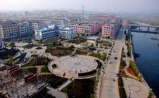

双峰县
|
双峰县隶属于湖南省娄底市，成立于1951年，以县境内有两座山峰相对耸立而得名。双峰县东邻湘潭县、衡山县，南接衡阳县，

西毗邵东县、涟源市，北界娄底市、湘乡市。东西宽61公里，南北长59.2公里。面积1715.14平方公里，占全省总面积的0.81%。总人口95.8万人（2015年）。双峰县辖13个镇、3个乡。县政府驻永丰镇。
|
|
双峰县有曾国藩故居为核心的古色旅游、以蔡和森纪念馆为中心的红色旅游和以水府庙双峰景区、九峰山为主体的绿色旅游。
截至2008年，双峰县有旅游景点50余处，如中华百年“八大女杰”之一的秋瑾故居、“天子坪地下军事工程”、“同福石林”、“石鸡寨”、“葛氏宗祠”、“三国蜀相蒋琬故居遗址”、“罗泽南故居”等。
|
|
九峰山森林公园
九峰山森林公园立于双峰县东南面30公里，在马鞍乡、荷叶乡与衡阳接界、因九峰并列而故名，海拔750.4，面积约212.7公顷。
公园分为古罗坪、槐花托两个景区，共有一级景点4个；定慧庵、千年连理枝、揽胜峰、五松迎客；二级景点4个；神鳅吐水、美女梳头、铁钉寨、雷祖殿；三级景点有钵孟山等十余个。
|
|
曾国藩故里
曾国藩故居富厚堂坐落在双峰县荷叶镇富托村的鳌鱼山脚，始建于清同治四年（1865年），由曾国潢、曾国荃和曾国藩之子曾纪泽（清著名外交家）在家主持修建，前后历经九年多时间才全面竣工。全宅占地4万平方米，建筑面积1万余平方米。由宅东门、宅西门、全宅围墙、毅勇侯第门楼、宅南求阙斋、归朴斋藏书楼、宅北艺芳馆藏书楼、八本堂前后进主楼、思云馆、缉园等组成富厚堂建筑群。
曾国藩故居富厚堂是全国重点文物保护单位，新潇湘八景之一，4A级旅游景区。 [2]
|